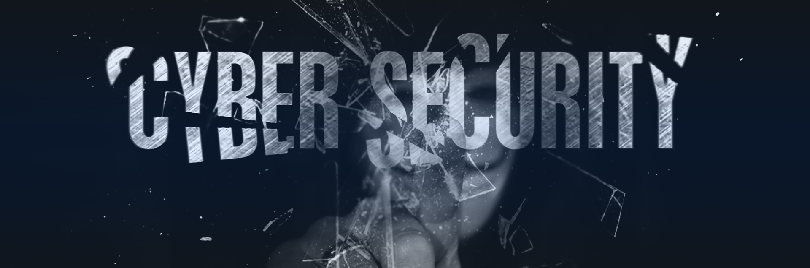
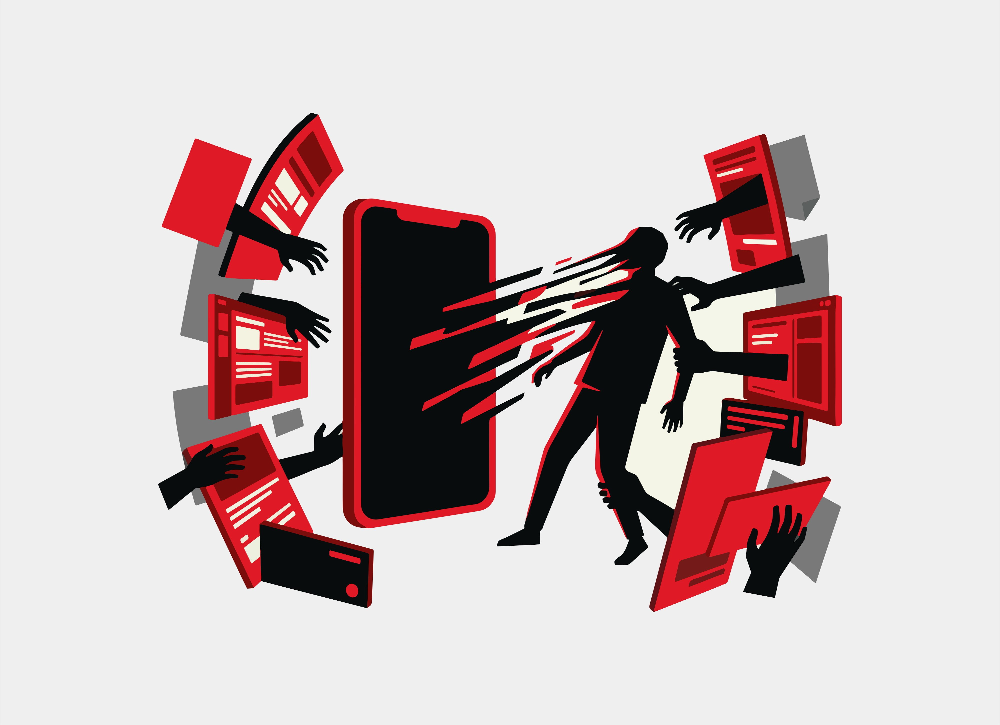
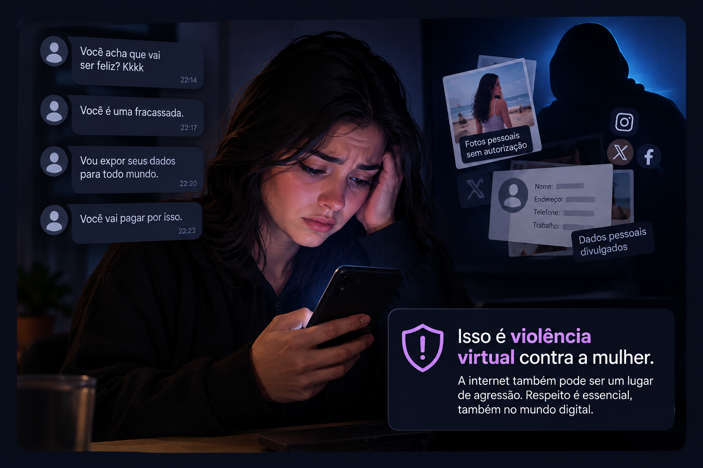
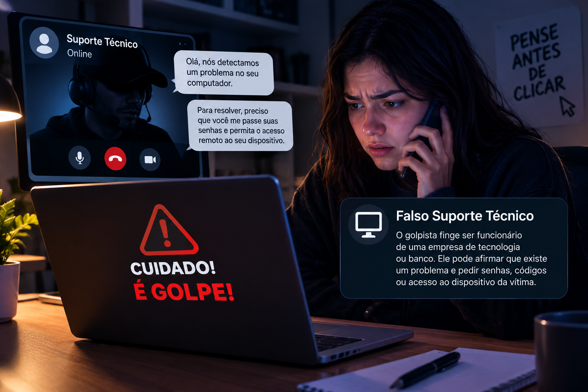

Proteção, Consciência e Cidadania Digital
Voltada a educar, prevenir golpes de engenharia social e proteger diferentes públicos no ciberespaço.

Crimes cibernéticos no Brasil.
Crescimento Alarmante
Crescimento expressivo no volume total de crimes virtuais registrados no país, impulsionado por golpes via Pix e engenharia social.
Medo constante de fraudes.
Insegurança Digital
Mais de 8 em cada 10 brasileiros relatam receio diário de cair em golpes bancários, clonagens de WhatsApp e estelionatos digitais.
Vítimas entre 16 e 29 anos.
Jovens Lideram
Por estarem hiperconectados e realizarem transações rápidas em redes sociais, jovens superam idosos (16%) em número de incidentes.
Violência contra mulheres
Ataques de Gênero
Aumento em denúncias de misoginia, perseguição digital, vazamentos não consensuais e deepfakes geradas por IA.

🎯 Cautela e Prevenção
Principais Recomendações
A segurança na internet é uma necessidade para todos, desde quem usa o celular apenas para trocar mensagens até quem faz operações financeiras o dia todo.
A regra básica para navegar com tranquilidade é a cautela: um minuto de atenção antes de preencher um formulário ou baixar um arquivo evita horas de dor de cabeça tentando recuperar o controle das suas contas.
🧭 Navegação por Públicos
O portal organiza seus conteúdos conforme os pontos de vulnerabilidade de cada público:
Testador e regras de proteção.
Deepfakes e canais de acolhimento.
Falso INSS e golpes pelo WhatsApp.
Jogos e adultos de confiança.
🧠 Quiz de Conscientização Digital
Teste seus reflexos de segurança contra as fraudes mais comuns abordadas no projeto.
Senhas: Proteja Seu Mundo Digital
Sua senha é a chave de entrada dos seus dados pessoais e bancários. Aprenda a blindar seus acessos.
🧪 Testador & Gerador de Senhas
Teste a força da sua combinação ou gere uma segura aleatoriamente.
⚪ Mínimo de 8 caracteres
⚪ Contém letra maiúscula
⚪ Contém letra minúscula
⚪ Contém número
⚪ Contém símbolo especial (!@#$...)
❌ Senhas Fracas & Comuns
Fáceis de adivinhar ou quebrar em segundos por dicionários automatizados.
Exemplos: 123456, senha, qwerty...
Por que são perigosas?
- 123456: É a mais testada por robôs.
- password / senha: Quebradas instantaneamente.
- Teclas contíguas (qwerty): Padrão manjado.
- Nomes e datas: Facilmente minerados no Instagram e Facebook.
✅ Senhas Fortes & Seguras
Combinações longas que demandam décadas para computadores quebrarem por força bruta.
Exemplo: Gato&Sol*27Amor
Padrões Recomendados
- A7m!P$9xLz: Alternância de símbolos e caixas.
- Tr@balh0#2026: Substituição leet com símbolos.
- Frases-passe: Junte 3 ou 4 palavras aleatórias com símbolos entre elas.
Não Reutilize
Cada conta precisa ter uma chave exclusiva.
Efeito Dominó
Se você usa a mesma senha em uma loja online e no e-mail principal, quando um site sofrer vazamento, todas as outras contas caem juntas.
Gerenciadores
Memorize apenas uma senha mestre.
Cofres Virtuais
Softwares como Bitwarden e 1Password guardam e preenchem senhas fortes e criptografadas em todos os seus aparelhos com total comodidade.
Autenticação 2FA
A dupla camada de defesa essencial.
Proteção Extra
Mesmo que alguém descubra sua senha, não conseguirá entrar sem o código de uso único gerado no aplicativo autenticador do seu celular.
Atualização
Troca rápida após incidentes.
Ação Imediata
Ao receber notificações de novo login suspeito ou alertas de vazamento de dados, troque as credenciais imediatamente.
Grupos Vulneráveis na Internet
Conectada, informada e protegida. Combate a crimes virtuais, vazamentos não consensuais, discurso de ódio, racismo, lgbtfobia e deepfakes.
Aviso: esta página trata de violência e exposição de imagens. O botão “Saída rápida” leva você para outro site na hora.
A culpa nunca é da vítima
Quem invade dispositivos, vaza fotos íntimas, extorque ou manipula fotos alheias é o criminoso. A vítima jamais deve ser culpabilizada ou hesitar em buscar ajuda.
Precisa de ajuda agora?
Os telefones são gratuitos. No celular, é só tocar no botão para ligar.
Ligue 180
Central de Atendimento à Mulher: orientação e encaminhamento em casos de violência contra a mulher.
LigarDisque 100
Denúncias de violações de direitos humanos, racismo, discriminação e violência contra grupos vulneráveis.
LigarSaferNet Brasil
Denúncias anônimas de racismo, lgbtfobia, misoginia e violência contra a mulher.
DenunciarVocê também pode registrar um Boletim de Ocorrência na Delegacia de Crimes Cibernéticos ou na DECRADI (Delegacia de Crimes Raciais e Delitos de Intolerância) do seu estado.
Como esses ataques acontecem
Conhecer os sinais ajuda a reagir mais rápido.
Exposição em relacionamentos
Término de relacionamento seguido de mensagens ofensivas, ameaças e publicação não autorizada de fotos pessoais para humilhação. São formas diretas de violência virtual.

Ataques e doxing
Recebimento de mensagens de ódio e divulgação não autorizada de dados pessoais (doxing) para intimidação, depois de expor opiniões nas redes.
Manipulação de imagem com IA
Uso indevido de fotos comuns de redes sociais para montagens pornográficas falsas, usadas para difamação e extorsão.
Como registrar e preservar provas
Faça isso antes de bloquear ou denunciar o perfil.
Tire prints
Capture a tela inteira, com nome de usuário, data, horário e, se possível, o endereço (URL) da publicação ou do perfil.
Guarde os links
Copie e salve os links das postagens ou dos perfis agressores antes que sejam apagados.
Ata notarial
Para valer em processo judicial, faça uma ata notarial em Cartório de Notas ou use plataformas especializadas de registro digital.
Não apague as conversas
Mantenha o histórico intacto no aplicativo, caso seja necessária uma perícia técnica.
Se a pessoa afetada for menor de idade e houver imagem íntima, não salve nem encaminhe a imagem. Denuncie direto à SaferNet ou à polícia e avise um adulto responsável.
Se você é adulto(a) e tem medo de que uma imagem íntima seja divulgada, ou ela já foi, o serviço gratuito StopNCII.org impede que ela seja publicada de novo nas plataformas parceiras. Ele não remove o que já está no ar: denuncie primeiro na própria plataforma.
Seus direitos: amparo legal no Brasil
Crimes no ambiente virtual têm amparo no Código Penal e em leis específicas. Toque para abrir.
Racismo e injúria racial: Lei nº 7.716/1989
Pune crimes de preconceito de raça, cor, etnia, religião ou procedência nacional, inclusive em publicações nas redes. Desde 2023, a injúria racial também é tratada como crime de racismo (Lei nº 14.532/2023). Ler a lei no Planalto
Homofobia e transfobia: decisão do STF (2019)
Ao julgar a ADO 26 e o MI 4733, o Supremo decidiu que ofensas homofóbicas e transfóbicas se enquadram na Lei de Racismo, enquanto não houver lei específica. Ler a notícia no STF
Perseguição (stalking): Lei nº 14.132/2021
Criminaliza a perseguição reiterada que ameaça, restringe a liberdade ou invade a privacidade de alguém, inclusive pela internet (art. 147-A do Código Penal). Ler a lei no Planalto
Intimidade sexual e montagens: Lei nº 13.772/2018 (Lei Rose Leonel)
Criminaliza registrar, sem autorização, cena de nudez ou ato sexual de caráter íntimo e privado (art. 216-B). Também pune quem faz montagem em foto, vídeo ou áudio para incluir uma pessoa em cena desse tipo, como nos deepfakes. Ler a lei no Planalto
Divulgação de cenas íntimas: Lei nº 13.718/2018 (art. 218-C)
Criminaliza oferecer, trocar, divulgar ou publicar, por qualquer meio, cena de sexo, nudez ou pornografia sem o consentimento da vítima. A pena é de 1 a 5 anos de reclusão, se não houver crime mais grave. Ler a lei no Planalto
Invasão de dispositivo: Lei nº 12.737/2012 (Lei Carolina Dieckmann)
Criminaliza invadir celular, computador ou conta de outra pessoa, conectado ou não à internet, para obter ou destruir dados (art. 154-A). Ler a lei no Planalto
Panorama geral
Dados de 2025 do DataSenado e da SaferNet. Os números da SaferNet contam denúncias recebidas, não todos os casos que acontecem.
Violência digital contra a mulher
8,8 milhões de brasileiras com 16 anos ou mais sofreram algum tipo de violência digital nos 12 meses anteriores à pesquisa.
Misoginia
Denúncias de violência ou discriminação contra mulheres na SaferNet em 2025, alta de 224,9% sobre 2024.
Racismo virtual
Denúncias de racismo na SaferNet em 2025, alta de 58,5% sobre as 2.032 de 2024.
LGBTfobia digital
Denúncias de LGBTfobia na SaferNet em 2025, alta de 24,3% sobre as 1.463 de 2024.
Segurança Digital para a Terceira Idade
Conectado sim, seguro sempre. Dicas para navegar com autonomia e evitar fraudes financeiras.
Falso Atendimento INSS
Suposta "Prova de Vida" pelo WhatsApp.
Como os golpistas agem
Alegam que o benefício será bloqueado e pedem fotos de documentos ou reconhecimento facial por links falsos para contrair empréstimos consignados.
Perfis falsos de celebridades
criminosos criam contas que imitam artistas ou influenciadores e abordam seguidores para pedir dinheiro ou dados.
Como desconfiar de um vídeo feito com IA
-
Observe principalmente a origem do vídeo e o contexto, e não apenas se o rosto ou a voz parecem
reais. Sinais de alerta podem incluir:
promessa de dinheiro fácil ou retorno garantido;
pedido urgente para clicar em um link ou fazer um pagamento;
perfil recém-criado ou com informações inconsistentes;
voz com entonação estranha ou movimentos faciais pouco naturais;
ausência do mesmo anúncio nos canais oficiais da pessoa;
link ou site com endereço diferente do oficial.
Golpe do WhatsApp
Um número desconhecido com a foto de um filho ou neto pede dinheiro com urgência.
Ligue no Número Salvo
Nunca faça transferências antes de ligar para o número antigo do familiar.
Sempre desligue e retorne a ligação para quem pediu dinheiro.
Nunca confirme pelo WhatsApp desconhecido. Faça uma chamada tradicional para a linha original de quem você já conhece.
Esse golpe acontece quando uma pessoa liga dizendo que é funcionária do banco. Ela pode falar que houve uma compra estranha, que alguém tentou entrar na sua conta ou que seu cartão está com problema. O golpista pode pedir senha, código do celular, número do cartão ou dinheiro por Pix. Ele também pode pedir para você instalar um aplicativo ou clicar em algum link.
Vamos navegar com segurança!
Eu sou o Cadu, o Detetive Digital. Descubra comigo como se divertir na internet sem cair em armadilhas.
Começar o desafioRegra de Ouro
Algo te deixou triste, com medo ou confuso? Pare, saia da tela e conte para um adulto de confiança!
4 dicas de super-herói
Siga estas dicas para se divertir com segurança.
Segredo é segredo
Nunca conte seu nome completo, endereço, escola ou telefone em jogos e chats.
Cuidado com estranhos
Quem fala com você na internet nem sempre é quem diz ser. Não envie fotos nem marque encontros.
Prêmio grátis? Cilada!
Links com vantagens grátis em jogos podem roubar sua conta ou trazer vírus.
Seja gentil
Trate todo mundo online como na escola. Nada de ofensas nem de repassar fofocas ou fotos dos outros.
Aconteceu algo ruim? Siga o caminho!
PARE
Feche a tela ou saia do jogo.
CONTE
Fale com seus pais ou professores. Eles estão aqui para te proteger.
REGISTRE
Não apague a conversa. Tire prints junto com um adulto.
BLOQUEIE
Use o botão de denunciar e bloquear.
Desafio do Detetive Digital
Você consegue descobrir o que fazer para ficar seguro na internet?
Um jogador que você não conhece pede uma foto sua. O que você faz?
Ameaças Digitais, Golpes & Inteligência Artificial
Engenharia social sofisticada, clonagem vocal por redes neurais e métodos de proteção institucional.
Phishing
Phishing
O phishing acontece quando criminosos enviam mensagens, e-mails ou criam sites falsos para enganar as pessoas. Eles podem tentar roubar senhas, dados bancários ou outras informações pessoais.

Suporte Falso
Falso Suporte Técnico
O golpista entra em contato dizendo ser funcionário de uma empresa de tecnologia ou banco. Ele pode afirmar que existe um problema e pedir senhas, códigos ou acesso ao dispositivo da vítima.
Loja Falsa
Loja Falsa
Criminosos criam lojas virtuais que parecem verdadeiras, com produtos e preços atrativos. A vítima realiza o pagamento, mas pode não receber o produto e ainda ter seus dados expostos.
Prêmio falso
Prêmio Falso
A vítima recebe uma mensagem dizendo que ganhou um prêmio, sorteio ou benefício. Para receber o suposto prêmio, o criminoso pode pedir dinheiro, dados pessoais ou informações bancárias.
Técnicas de Manipulação
Como os criminosos usam a tecnologia contra você.
Clonagem de voz por IA, Phishing financeiro e sequestro de acessos.
Métodos Comuns
- Clonagem de Voz com IA: Bastam poucos segundos de áudio de redes sociais para clonar a voz de um familiar.
- Phishing Bancário: Páginas idênticas às de instituições financeiras para roubar logins.
- Invasão de Contas: Links que roubam a sessão do navegador e sequestram o WhatsApp.
Medidas de Proteção Ativa
Ações fáceis para desarmar fraudes tecnológicas.
Dicas Práticas
- Palavra-Chave Familiar: Combine uma palavra secreta com parentes para checar se uma ligação urgente com voz deles é real.
- Canais Seguros: Acesse bancos apenas pelo app oficial, nunca por links recebidos via SMS.
- Desconfie de Prêmios Fáceis: Retornos financeiros milagrosos são sempre armadilhas.